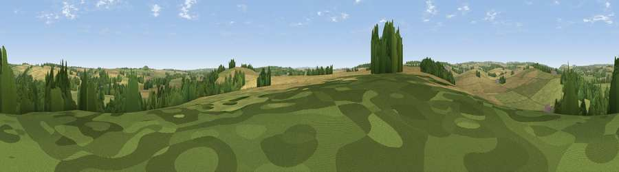

Viewpoint near Spetisbury
#34512 in England · top 70% of its area beats it · near SpetisburyWhere it is
The exact computed spot (ST 90825 02525). Click the marker for map links.
The view, rendered

A 360° render of this exact spot computed from the terrain model, tree cover and land cover — summer colours, afternoon light, calibrated against photographs of famous viewpoints. Real trees, hedges and buildings will differ in detail.
The panorama
Grey silhouette: terrain skyline in each direction (720 bearings, Earth curvature and refraction included). Dashed green: skyline with trees (+15 m) and buildings (+8 m) as obstacles. Blue strip: how far the ground is visible on each bearing.
Where the view opens
Wedge length = distance to the farthest visible ground on that bearing (vegetation-aware). Rings at 10, 25 and 50 km.
What fills the view
50% grassland · 33% cropland · 16% woodland · 2% built-up
Angular shares of the visible panorama (visual magnitude), not map area. Landscape diversity 0.47 (0–1 Shannon).
Key numbers
More beautiful places nearby
The staircase of upgrades: each row has a higher view potential than everything closer. Driving times are estimates from straight-line distance, calibrated against real road routing — check an actual route before setting out.
| Place | Direction | Drive | Score |
|---|---|---|---|
| Viewpoint near Spetisbury | SE · 1 km | ~3 min | 45.2 |
| Viewpoint near Morden | SSE · 5 km | ~12 min | 49.3 |
| Viewpoint near Sturminster Marshall | SSE · 5 km | ~12 min | 50.6 |
| Viewpoint near Morden | SSE · 5 km | ~12 min | 55.7 |
| Viewpoint near Winterborne Houghton | W · 9 km | ~18 min | 59.9 |
| Viewpoint near Milton Abbas | W · 10 km | ~19 min | 64.2 |
| Hambledon Hill | NNW · 11 km | ~21 min | 72.7 |
| Hambledon Hill | NNW · 12 km | ~22 min | 74.6 |
50.82219, -2.13162 · source: screening · position refined by local search. Computed location — check access rights before visiting.